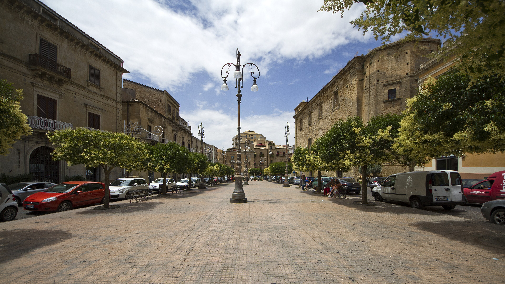
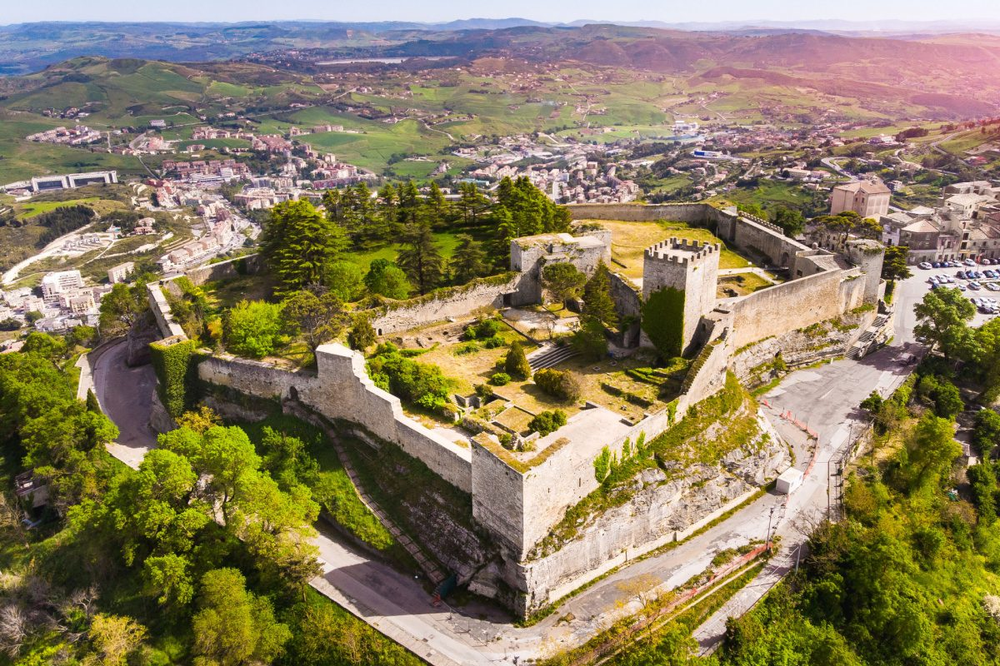
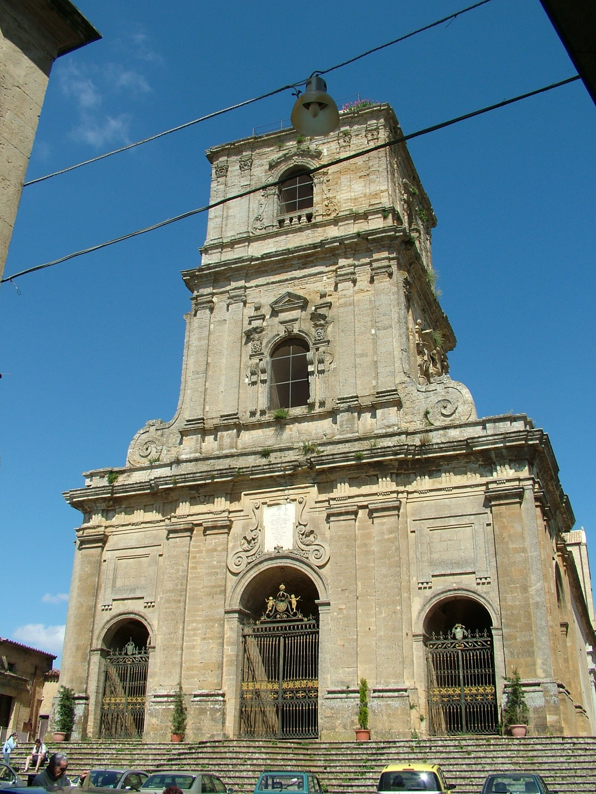

Piazza Vittorio Emanuele,
Enna

Piazza Vittorio Emanuele
La Piazza Vittorio Emanuele è uno dei principali spazi urbani della città di Enna, spesso considerata il “belvedere della Sicilia” per la sua posizione elevata nel cuore dell’isola. La piazza rappresenta il punto di riferimento della vita cittadina moderna, ma conserva anche un forte legame con la storia e l’identità del centro storico.
Situata in posizione panoramica, la piazza è circondata da edifici istituzionali e attività storiche, e si apre su scorci che dominano le vallate circostanti. Questo elemento paesaggistico è uno dei suoi tratti più caratteristici: da qui lo sguardo si estende per chilometri, offrendo una delle viste più ampie e suggestive dell’entroterra siciliano.
Uno dei punti più importanti nei dintorni è la vicina Cattedrale di Enna, dedicata a Maria Santissima della Visitazione. Questo edificio monumentale, con la sua imponente facciata barocca e gli interni ricchi di decorazioni, rappresenta uno dei principali simboli religiosi della città e un punto centrale della devozione locale.
La piazza è anche un luogo di incontro quotidiano: qui si svolgono passeggiate, eventi pubblici e momenti di socialità, soprattutto nelle ore serali quando il clima più fresco invita a fermarsi e godere del panorama. La sua atmosfera è tranquilla e raccolta, tipica delle città interne siciliane, dove il ritmo della vita è più lento e legato alle tradizioni.
Una curiosità interessante riguarda proprio la posizione di Enna: essendo uno dei capoluoghi più alti d’Italia, Piazza Vittorio Emanuele offre una sensazione unica di “città sospesa tra cielo e terra”, rendendola un punto panoramico naturale oltre che urbano.


Castello di Lombardia
Una delle più grandi fortificazioni medievali della Sicilia, costruita su un’altura strategica. Offre una vista spettacolare a 360° sull’isola.

Torre Federico II
Antica torre ottagonale attribuita a Federico II di Svevia, immersa in un’area verde tranquilla e ricca di storia.

Duomo di enna
Uno dei più importanti edifici religiosi della città, con una facciata imponente e interni decorati in stile barocco siciliano.